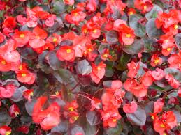

Bégonia

Bégonia (Toutes les espèces de la famille des Bégoniacées)
Toxique plus toxicité de contact.
Partie toxique pour les chats en général et le Korat en particulier :
Toute la plante mais particulièrement les racines : certains propriétaires de Korat possèdent des bégonias et tout se passe bien contrairement à d'autres. En tout état de cause, lors de dépotage de bégonia, éloignez votre Korat.
Symptômes du processus pathologique :
Vomissements, diarrhée (après ingestion, diarrhée contenant du sang) plus irritant des muqueuses et de la peau.
Origine de la toxicité (principe actif) :
Cristaux d'oxalate de calcium.